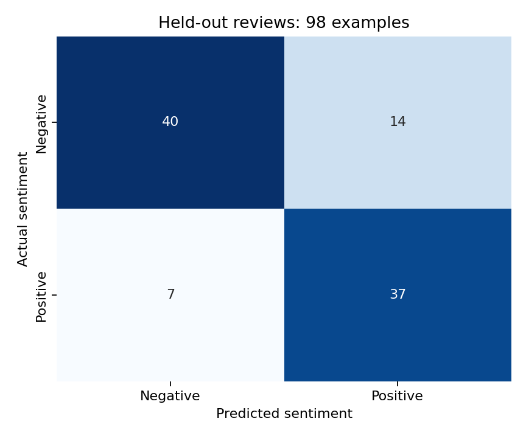
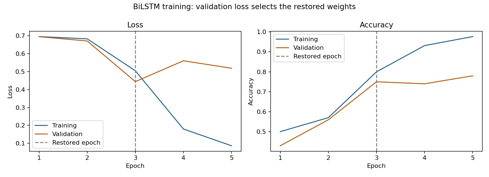

Business question
Can a compact recurrent neural network classify sentiment in short movie reviews?
Approach
How the work was done
- Parsed 1,000 individual IMDb excerpts and removed three exact duplicate pairs. Grouped splits keep identical cleaned texts together: 799 training, 100 validation and 98 test reviews.
- Fitted the vocabulary on training text only and padded sequences to 50 tokens, covering all cleaned training reviews. The saved tokenizer and preprocessing metadata accompany the model.
- Trained a 100-dimension embedding and 128-unit bidirectional LSTM with a 64-unit dense layer, dropout, sigmoid output, and early stopping.
Results
What the analysis shows
- On the held-out test set, 77 of 98 predictions were correct: accuracy 78.57%, positive-class precision 0.7255, recall 0.8409 and F1 0.7789 at a 0.5 threshold.
- The negative-review queue contained 47 reviews: 40 negative and 7 positive. It caught 40 of 54 negative reviews and missed 14.
- The trained Keras model is included in the repository so it can be inspected or loaded without retraining.
From the project
Held-out errors and validation during training

The manual-review workload
Negative predictions flag 47 of 98 reviews. The queue contains 40 actual negative reviews and 7 positive reviews; 14 negative reviews are missed.

Training fit and unseen reviews
Training continued for five epochs and restored the epoch 3 weights with the lowest validation loss. The later divergence shows why fitting the training reviews alone is not enough.
Business relevance
What this makes easier to decide
The model offers a repeatable way to summarize sentiment from text, with a clear precision-recall tradeoff to consider before using the labels for customer-experience monitoring.